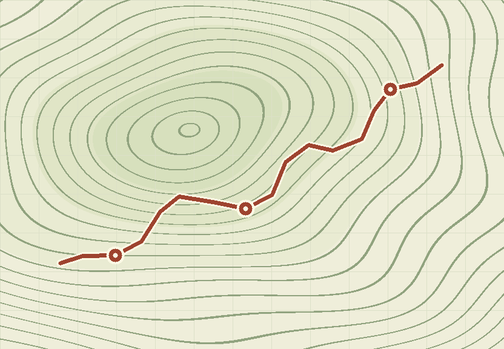

A short walk, well noticed.
Take a familiar loop and see what’s changed since your last visit. Start with one thing worth a closer look.
Browse the guides
Take a familiar loop and see what’s changed since your last visit. Start with one thing worth a closer look.
Browse the guides